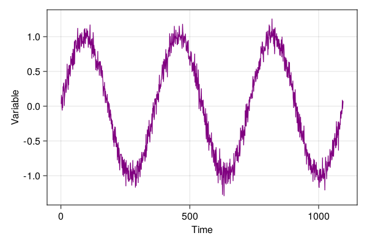
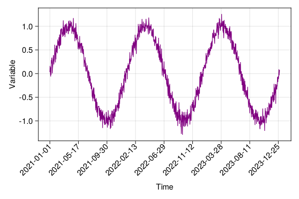
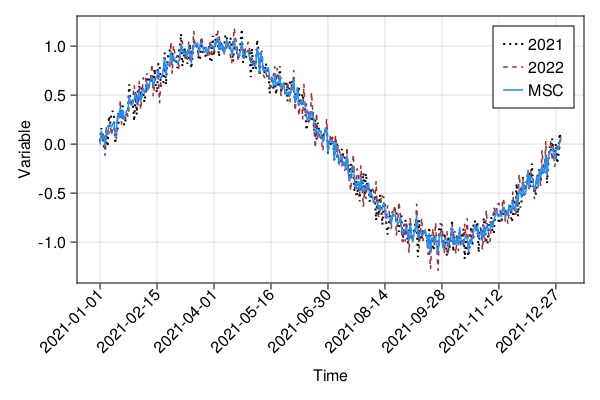

Apply functions on YAXArrays
How to apply functions on YAXArrays
To apply user defined functions on a YAXArray data type we can use the map function, mapslices function or the mapCube function. Which of these functions should be used depends on the layout of the data, that the user defined function should be applied on.
Apply a function on every element of a datacube¤
The map function can be used to apply a function on every entry of a YAXArray without taking the dimensions into account. This will lazily register the mapped function which is applied when the YAXArray is either accessed or when more involved computations are made.
#If we set up a dummy data cube which has all numbers between 1 and 10000.
using YAXArrays
using DimensionalData
axes = (Dim{:Lon}(1:10), Dim{:Lat}(1:10), Dim{:Time}(1:100))
original = YAXArray(axes, reshape(1:10000, (10,10,100)))
10×10×100 YAXArray{Int64,3} with dimensions:
Dim{:Lon} Sampled{Int64} 1:10 ForwardOrdered Regular Points,
Dim{:Lat} Sampled{Int64} 1:10 ForwardOrdered Regular Points,
Dim{:Time} Sampled{Int64} 1:100 ForwardOrdered Regular Points
Total size: 78.12 KB
with one at the first position:
original[1,:,1]
10-element YAXArray{Int64,1} with dimensions:
Dim{:Lat} Sampled{Int64} 1:10 ForwardOrdered Regular Points
Total size: 80.0 bytes
now we can substract 1 from all elements of this cube
substracted = map(x-> x-1, original)
10×10×100 YAXArray{Int64,3} with dimensions:
Dim{:Lon} Sampled{Int64} 1:10 ForwardOrdered Regular Points,
Dim{:Lat} Sampled{Int64} 1:10 ForwardOrdered Regular Points,
Dim{:Time} Sampled{Int64} 1:100 ForwardOrdered Regular Points
Total size: 78.12 KB
substracted is a cube of the same size as original, and the applied function is registered, so that it is applied as soon as the elements of substracted are either accessed or further used in other computations.
substracted[1,:,1]
10-element YAXArray{Int64,1} with dimensions:
Dim{:Lat} Sampled{Int64} 1:10 ForwardOrdered Regular Points
Total size: 80.0 bytes
Apply a function along dimensions of a single cube¤
If an function should work along a certain dimension of the data you can use the 'mapslices' function to easily apply this function. This doesn't give you the flexibility of the mapCube function but it is easier to use for simple functions.
If we set up a dummy data cube which has all numbers between 1 and 10000.
axes = (Dim{:Lon}(1:10), Dim{:Lat}(1:10), Dim{:Time}(1:100))
original = YAXArray(axes, reshape(1:10000, (10,10,100)))
10×10×100 YAXArray{Int64,3} with dimensions:
Dim{:Lon} Sampled{Int64} 1:10 ForwardOrdered Regular Points,
Dim{:Lat} Sampled{Int64} 1:10 ForwardOrdered Regular Points,
Dim{:Time} Sampled{Int64} 1:100 ForwardOrdered Regular Points
Total size: 78.12 KB
and then we would like to compute the sum over the Time dimension:
timesum = mapslices(sum, original, dims="Time")
10×10 YAXArray{Union{Missing, Int64},2} with dimensions:
Dim{:Lon} Sampled{Int64} 1:10 ForwardOrdered Regular Points,
Dim{:Lat} Sampled{Int64} 1:10 ForwardOrdered Regular Points
Total size: 800.0 bytes
this reduces over the time dimension and gives us the following values
timesum[:,:]
10×10 YAXArray{Union{Missing, Int64},2} with dimensions:
Dim{:Lon} Sampled{Int64} 1:10 ForwardOrdered Regular Points,
Dim{:Lat} Sampled{Int64} 1:10 ForwardOrdered Regular Points
Total size: 800.0 bytes
You can also apply a function along multiple dimensions of the same data cube.
lonlatsum = mapslices(sum, original, dims=("Lon", "Lat"))
100-element YAXArray{Union{Missing, Int64},1} with dimensions:
Dim{:Time} Sampled{Int64} 1:100 ForwardOrdered Regular Points
Total size: 800.0 bytes
How to combine multiple cubes in one computation¤
Compute the Mean Seasonal Cycle for one sigle pixel¤
using CairoMakie
CairoMakie.activate!()
using Dates
using Statistics
We define the data span. For simplicity, three non-leap years were selected.
t = Date("2021-01-01"):Day(1):Date("2023-12-31")
NpY = 3
# create some seasonal dummy data
x = repeat(range(0, 2π, length=365), NpY)
var = @. sin(x) + 0.1 * randn()
lines(1:length(t), var; color = :purple, linewidth=1.25,
axis=(; xlabel="Time", ylabel="Variable"),
figure = (; resolution = (600,400))
)

Currently makie doesn't support time axis natively, but the following function can do the work for now.
function time_ticks(dates; frac=8)
tempo = string.(dates)
lentime = length(tempo)
slice_dates = range(1, lentime, step=lentime ÷ frac)
return slice_dates, tempo[slice_dates]
end
xpos, ticks = time_ticks(t; frac=8)
(1:136:1089, ["2021-01-01", "2021-05-17", "2021-09-30", "2022-02-13", "2022-06-29", "2022-11-12", "2023-03-28", "2023-08-11", "2023-12-25"])
In order to apply the previous output, we split the plotting function into his 3 components, figure, axis and plotted object, namely
fig, ax, obj = lines(1:length(t), var; color = :purple, linewidth=1.25,
axis=(; xlabel="Time", ylabel="Variable"),
figure = (; resolution = (600,400))
)
ax.xticks = (xpos, ticks)
ax.xticklabelrotation = π / 4
ax.xticklabelalign = (:right, :center)
fig

Define the cube¤
axes = (Dim{:Time}(t),)
c = YAXArray(axes, var)
1095-element YAXArray{Float64,1} with dimensions:
Dim{:Time} Sampled{Date} Date("2021-01-01"):Dates.Day(1):Date("2023-12-31") ForwardOrdered Regular Points
Total size: 8.55 KB
Let's calculate the mean seasonal cycle of our dummy variable 'var'
function mean_seasonal_cycle(c; ndays = 365)
# filterig by month-day
monthday = map(x->Dates.format(x, "u-d"), collect(c.Time))
datesid = unique(monthday)
# number of years
NpY = Int(size(monthday,1)/ndays)
idx = Int.(zeros(ndays, NpY))
# get the day-month indices for data subsetting
for i in 1:ndays
idx[i,:] = Int.(findall(x-> x == datesid[i], monthday))
end
# compute the mean seasonal cycle
mscarray = map(x->var[x], idx)
msc = mapslices(mean, mscarray, dims=2)
return msc
end
msc = mean_seasonal_cycle(c);
Plot results: mean seasonal cycle¤
xpos, ticks = time_ticks(t[1:365]; frac=8)
fig, ax, obj = lines(1:365, var[1:365]; label="2021", color=:black,
linewidth=2.0, linestyle=:dot,
axis = (; xlabel="Time", ylabel="Variable"),
figure=(; resolution = (600,400))
)
lines!(1:365, var[366:730], label="2022", color=:brown,
linewidth=1.5, linestyle=:dash
)
lines!(1:365, msc[:,1]; label="MSC", color=:dodgerblue, lw=2.5)
axislegend()
ax.xticks = (xpos, ticks)
ax.xticklabelrotation = π / 4
ax.xticklabelalign = (:right, :center)
fig
current_figure()

This page was generated using Literate.jl.